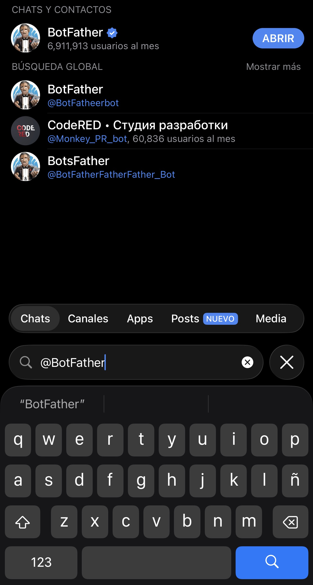
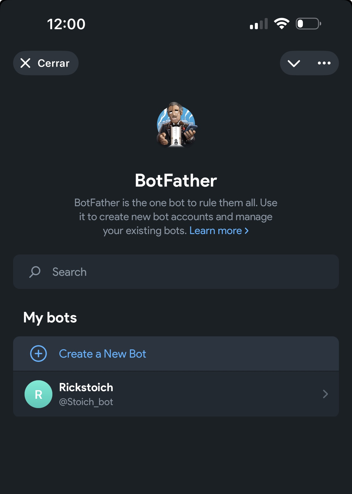
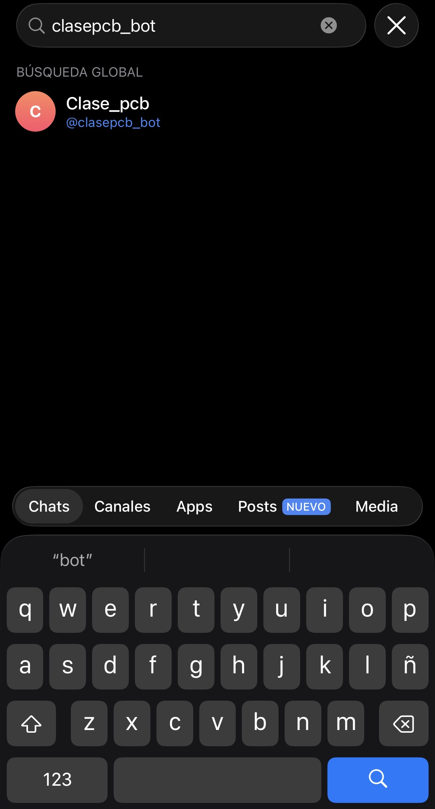
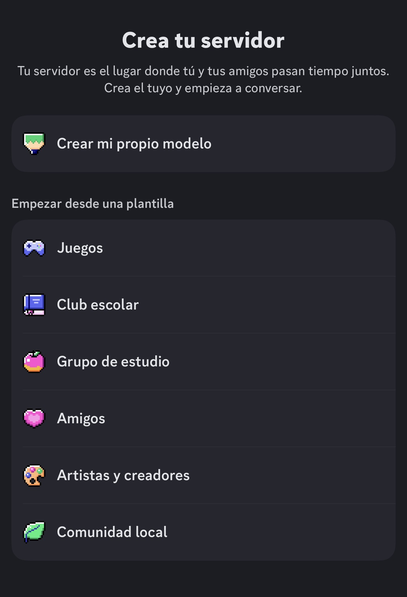
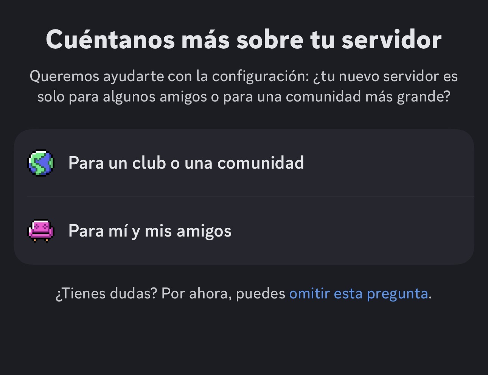
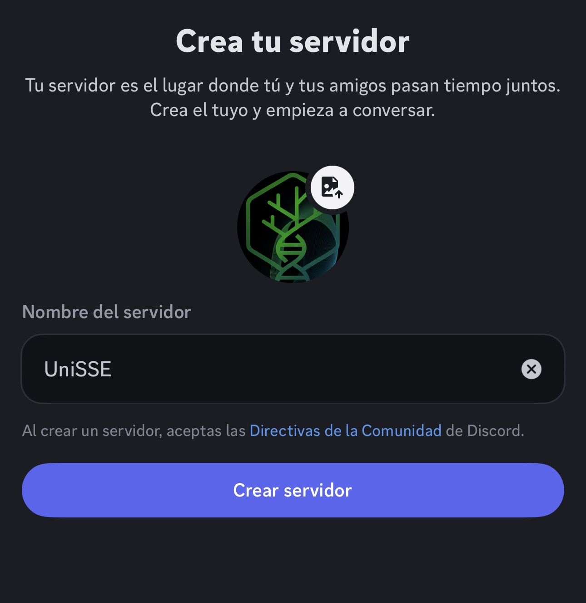
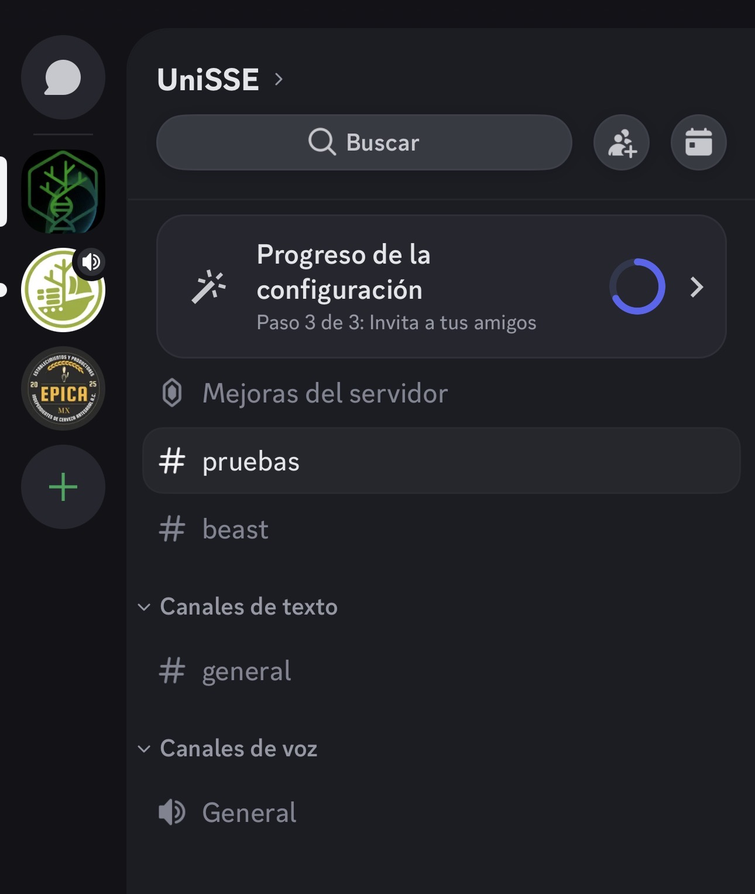
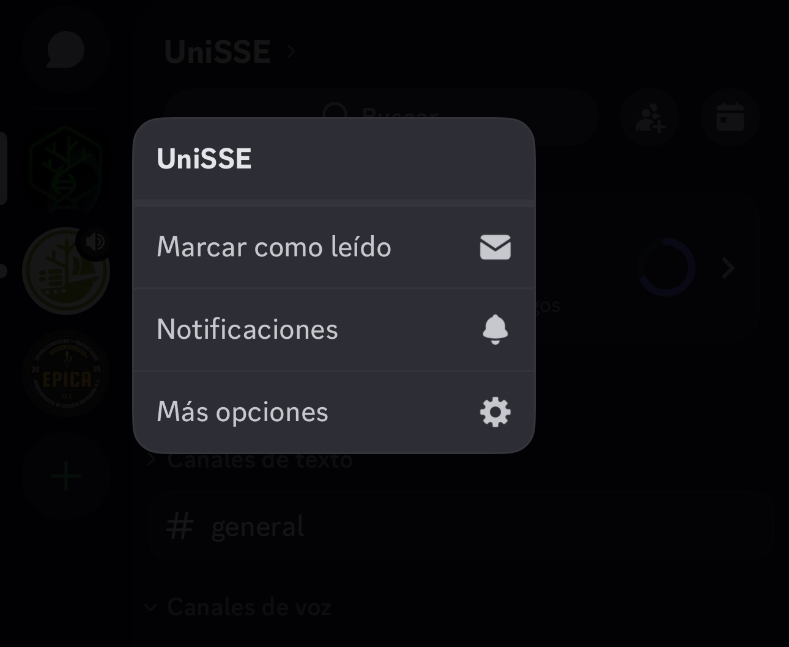
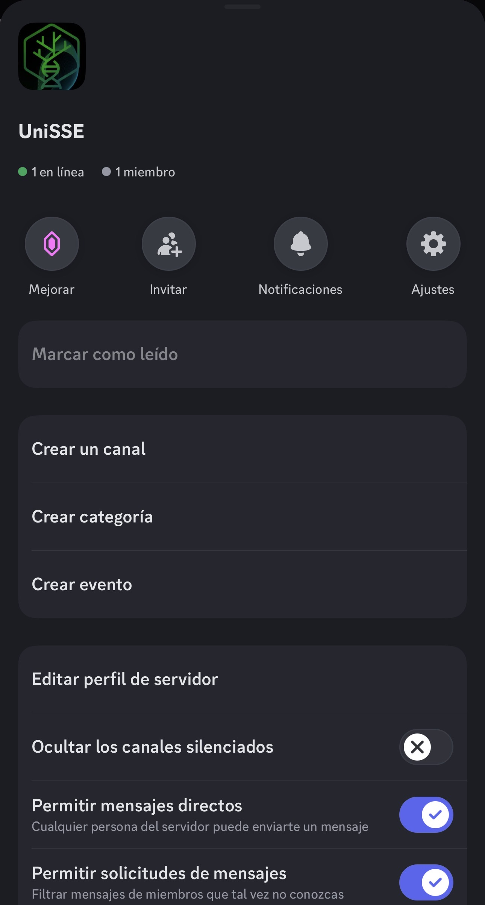
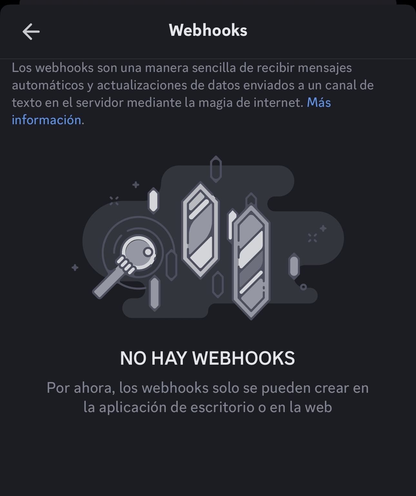

Notificaciones automáticas
Esta sección explica cómo preparar notificaciones automáticas desde scripts de Bash, pipelines o análisis largos. La idea es recibir avisos cuando un proceso inicia, termina correctamente o falla.
Un token de Telegram o una URL de webhook de Discord funcionan como una contraseña. No los compartas, no los pegues en documentos públicos y no los subas a GitHub.
Mensajes a Telegram
Crear un bot en Telegram
- Busca @BotFather y abre el chat.

- Crea un nuevo bot.

- Ponle un nombre al bot y elige un nombre de usuario que termine en
bot. Elusernamedebe estar disponible.

- BotFather te dará un token.

✅ Ese token es tu contraseña del bot. No lo compartas.
- Abre el chat con tu bot, buscándolo por su
username.

- Presiona Iniciar.

Conseguir tu chat_id
Define temporalmente el token de tu bot:
TELEGRAM_BOT_TOKEN="TU_TOKEN_AQUI"Después consulta las actualizaciones del bot:
curl -s "https://api.telegram.org/bot${TELEGRAM_BOT_TOKEN}/getUpdates"Busca en la salida una sección parecida a esta:
"chat":{"id":123456789,"first_name":"Pedro"}El número que aparece en id es tu TELEGRAM_CHAT_ID.
chat_id
Primero escribe cualquier mensaje en el chat de tu bot y vuelve a ejecutar el comando getUpdates.
Enviar un mensaje con curl
TELEGRAM_BOT_TOKEN="TU_TOKEN_AQUI"
TELEGRAM_CHAT_ID="TU_CHAT_ID_AQUI"
curl -s -X POST "https://api.telegram.org/bot${TELEGRAM_BOT_TOKEN}/sendMessage" \
-d "chat_id=${TELEGRAM_CHAT_ID}" \
-d "text=Hola 👋 Mensaje enviado desde Bash"Guardar credenciales en un archivo .env
Crea un archivo .env fuera del repositorio del proyecto, o agrégalo al archivo .gitignore.
nano .envContenido recomendado:
TELEGRAM_BOT_TOKEN="TU_TOKEN_AQUI"
TELEGRAM_CHAT_ID="TU_CHAT_ID_AQUI"Protege el archivo para que solo tu usuario pueda leerlo:
chmod 600 .envSi el archivo .env está dentro de un proyecto con Git, agrégalo a .gitignore:
nano .gitignoreAgrega esta línea:
.envFunción reusable tg_send
Carga primero las variables del archivo .env:
source .envDespués define la función:
tg_send () {
local msg="$1"
curl -s -X POST "https://api.telegram.org/bot${TELEGRAM_BOT_TOKEN}/sendMessage" \
-d "chat_id=${TELEGRAM_CHAT_ID}" \
-d "text=${msg}" \
-d "disable_web_page_preview=true" > /dev/null
}Uso:
tg_send "✅ Pipeline terminado correctamente."Usar Telegram en un script de Bash
El siguiente patrón permite enviar una notificación al iniciar y otra al terminar un proceso.
#!/usr/bin/env bash
set -euo pipefail
source /ruta/a/tu/.env
tg_send () {
local msg="$1"
curl -s -X POST "https://api.telegram.org/bot${TELEGRAM_BOT_TOKEN}/sendMessage" \
-d "chat_id=${TELEGRAM_CHAT_ID}" \
-d "text=${msg}" \
-d "disable_web_page_preview=true" > /dev/null
}
tg_send "🚀 Inició el análisis"
if comando_largo; then
tg_send "✅ El análisis terminó correctamente"
else
tg_send "❌ El análisis terminó con error"
exit 1
fiMensajes a Discord
Discord puede utilizarse para recibir notificaciones automáticas desde scripts de Bash. Para este uso no es necesario crear un bot completo: lo más práctico es usar webhooks.
Un webhook es una URL especial asociada a un canal de Discord. Cuando un script envía un mensaje a esa URL, el mensaje aparece automáticamente en ese canal.
Usa un webhook por canal para mantener las notificaciones ordenadas.
| Canal de Discord | Uso sugerido |
|---|---|
#pruebas |
Probar mensajes antes de usarlos en análisis reales |
#beast |
Notificaciones de análisis de BEAST/BEAST2 |
#cpu |
Análisis generales con CPU |
#gpu |
Análisis que usan GPU |
#errores |
Mensajes cuando un proceso falla |
En Discord, crea un servidor nuevo para organizar los canales de notificación.
- Selecciona Crear mi propio modelo.

- Discord puede preguntar si el servidor será para una comunidad o para amigos. Para un grupo de trabajo, curso o laboratorio, puedes elegir Para un club o una comunidad. También puedes omitir esta pregunta.

- Asigna un nombre al servidor. En este ejemplo se usa
UniSSE.

- Discord puede mostrar una pantalla para invitar personas. Puedes copiar el enlace, compartirlo o cerrar esta pantalla y continuar configurando el servidor.
- Una vez creado el servidor, verás los canales disponibles. En este ejemplo se crearon canales como
#pruebasy#beast.

Crear canales
Para crear canales desde la aplicación móvil:
- Abre el menú del servidor.
- Selecciona Más opciones.

- Selecciona Crear un canal.

Puedes crear canales separados para diferentes tipos de análisis:
#pruebas
#beast
#cpu
#gpu
#erroresSeparar los mensajes ayuda a evitar ruido. Los análisis de prueba pueden llegar a #pruebas, los análisis con GPU a #gpu y los errores a #errores.
Crear un webhook para un canal
En la app móvil de Discord puede aparecer el apartado de Webhooks, pero Discord indica que, por ahora, los webhooks solo se pueden crear desde la aplicación de escritorio o desde Discord en la web.
Para crear y copiar la URL del webhook, usa una computadora o entra a Discord desde el navegador.

Guardar los webhooks en un archivo .env
Crea un archivo .env para guardar las URLs de los webhooks.
nano .envContenido recomendado:
DISCORD_WEBHOOK_PRUEBAS="https://discord.com/api/webhooks/XXXX/YYYY"
DISCORD_WEBHOOK_BEAST="https://discord.com/api/webhooks/XXXX/YYYY"
DISCORD_WEBHOOK_CPU="https://discord.com/api/webhooks/XXXX/YYYY"
DISCORD_WEBHOOK_GPU="https://discord.com/api/webhooks/XXXX/YYYY"
DISCORD_WEBHOOK_ERRORES="https://discord.com/api/webhooks/XXXX/YYYY"Dale permisos restringidos al archivo:
chmod 600 .envSi el archivo .env está dentro de un proyecto con Git, agrégalo al archivo .gitignore:
nano .gitignoreAgrega:
.envProbar un webhook con curl
Primero carga las variables del archivo .env:
source .envDespués envía un mensaje de prueba:
curl -s -H "Content-Type: application/json" \
-X POST \
-d '{"content":"Hola 👋 mensaje enviado desde Bash"}' \
"$DISCORD_WEBHOOK_PRUEBAS"Si todo está bien configurado, el mensaje aparecerá en el canal de Discord asociado a ese webhook.
Función reusable discord_send
Para reutilizar el envío de mensajes en varios scripts, puedes definir una función de Bash:
discord_send () {
local webhook="$1"
local msg="$2"
payload=$(python3 -c 'import json,sys; print(json.dumps({"content": sys.argv[1]}, ensure_ascii=False))' "$msg")
curl -s -H "Content-Type: application/json" \
-X POST \
-d "$payload" \
"$webhook" > /dev/null
}Uso:
source .env
discord_send "$DISCORD_WEBHOOK_PRUEBAS" "✅ Mensaje enviado desde Bash"Usar Discord en un script de Bash
El siguiente patrón envía un mensaje cuando inicia un proceso y otro cuando termina. Si el proceso falla, manda el aviso al canal de errores.
#!/usr/bin/env bash
set -euo pipefail
source /ruta/a/tu/.env
discord_send () {
local webhook="$1"
local msg="$2"
payload=$(python3 -c 'import json,sys; print(json.dumps({"content": sys.argv[1]}, ensure_ascii=False))' "$msg")
curl -s -H "Content-Type: application/json" \
-X POST \
-d "$payload" \
"$webhook" > /dev/null
}
on_exit () {
status=$?
if [ "$status" -eq 0 ]; then
discord_send "$DISCORD_WEBHOOK_PRUEBAS" "✅ El análisis terminó correctamente"
else
discord_send "${DISCORD_WEBHOOK_ERRORES:-$DISCORD_WEBHOOK_PRUEBAS}" "❌ El análisis terminó con error"
fi
}
trap on_exit EXIT
discord_send "$DISCORD_WEBHOOK_PRUEBAS" "🚀 Inició el análisis"
comando_largoMensajes para análisis específicos
Si tienes un canal específico para BEAST, puedes enviar los mensajes a ese canal:
discord_send "$DISCORD_WEBHOOK_BEAST" "🧬 Inició análisis de BEAST"Y en caso de error, usar el canal de errores:
discord_send "$DISCORD_WEBHOOK_ERRORES" "⚠️ Falló el análisis de BEAST"Para análisis que usan GPU, puedes usar un webhook específico:
discord_send "$DISCORD_WEBHOOK_GPU" "🚀 Inició análisis con GPU"Al finalizar:
discord_send "$DISCORD_WEBHOOK_GPU" "✅ Terminó análisis con GPU"¿Qué hacer si se filtró una URL de webhook?
Si accidentalmente compartiste una URL de webhook o la subiste a GitHub:
- Entra a Discord.
- Abre la configuración del canal.
- Ve a Integraciones.
- Entra a Webhooks.
- Elimina el webhook comprometido.
- Crea un webhook nuevo.
- Actualiza tu archivo
.env.
No basta con borrar la URL del repositorio si ya fue publicada. Lo más seguro es eliminar ese webhook y crear uno nuevo.